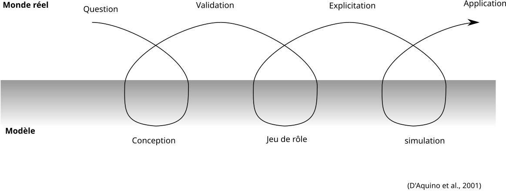

ComMod, une posture !
Mon point de vue
Par E. Delay (Cirad Dir ES. UMR Sens) travail issu du collectif ComMod 30 juin 2022 - CASSECs
expliciter le point de vue
mon parcours
- Géographie atypique
- Le logiciel libre
- Une thèse sur la viticulture entre Banyuls sur mer et le val di Cembra
- Un post-doc sur l'entraide et l'irrigation
- Un post-doc sur la Grande Muraille verte au Sahel
ComMod, une histoire
Time line

Différentes communautés

Les grands principes
Problèmes pernicieux et sciences post-normales
« a wicked problem is a problem that is difficult or impossible to solve because of incomplete, contradictory, and changing requirements that are often difficult to recognize »
Rittel 1973
« when uncertainties are either of the epistemological or ethical kind, or when decision stakes reflect conflicting purposes among stakeholders »
Funtowic et Ravertz 1993 (p. 750)
Le statut de la vérité
Questionner le statut de la vérité (Barlas and Carpenter 1990, p. 157)
- Logical empirism
- «Since the model is assumed to be an objective and absolute representation of the real system, it can be either true or false»
- Relativiste philosophical approch
- «No model can claim absolute objectivity, for every model carries in it the modeler’s world view. Models are not true or false but lie on a continuum of usefulness»
ComMod par l'exemple
Projet ProSuLi


conflit Homme Faune Sauvage


Projet Doubt


Le jeu comme système de contrainte


Modélisation Participative et épistemologie
Il y a différentes façons de penser la modélisation participative, et ComMod est l'une d'elles.
Modélisation Participative : méthodes
Modélisation Participative : outils

Philosophie des sciences

Un tour d'horizon de la posture
Quelques cadres théoriques (Bousquet et al. 2009)
- Constructivisme : Favoriser une organisation apprenante (Piaget 2003)
- Diversité d'acteurs - diversité de points de vue
- Diversité dynamique dans le temps
- Pluralisme culturelle
- Construction d'un cadre interprétatif collectif
- Science post-normale : qualité de décision dans un contexte complexe
- La qualité de la décision se mesure à la qualité du processus
- Encourage le dialogue citoyen sans préciser les formes
- Connectivisme : considérer la construction de savoirs comme un processus qui se produit dans un environnement flou
- Le groupe autant que l'individu sont des organismes apprenants
- Nos compétences dérivent de notre capacité à former des connexions
Quelques cadres théoriques (Bousquet et al. 2009)
- Apprentissage collectif
- Science de gestion, l'individu est une donnée et on s'interroge sur les conditions de production du consensus (Hatchuel, 2005)
- Sciences politiques, expression des valeurs en fonction des arènes, du rôle, du status (Ostrom et al. 1994)
- La médiation et objet intermédiaire
- Le recours à un tiers pour garantir le dialogue (Guillaume-Hoffnung, 2005)
- Reconnaitre la valeur de l'autre sans nier sa différence
- Utiliser des objets intermédiaires pour garantir la communication entre acteurs hétérogènes (Star et Griesemer, 1989; Vinck 1999)
Les Objectifs
- Produire de connaissances
- Sur les systèmes de gestion de ressources naturelles et des territoires
- À destination des chercheurs ou des acteurs locaux
- Cheminement progressif et traçable vers une meilleure compréhension de processus de décision collective
- Le modèle pour mettre en dynamique des points de vue variés sur un système complexe et l’explorer
- Le modèle pour mettre en débat des représentations
- Accès à différents formats de connaissance
- Emanciper les participants
ComMod dans
- Une école thématique en 2021
- Un stage Sénégal 2022
- Un stage Burkina fasso 2021 et 2022
La formation ComMod - CASSECs
- 5j de formation
- 5 participants
~
Des objectifs généraux
Co-identifier les pratiques agropastorales pour améliorer le bilan carbone à l’échelle du territoire
La production
- Un modèle conceptuel
- Une grammaire visuelle de jeu : modulable et à adapter au contexte
- Un manuel avec une description et des règles
- Un guide d'observation adapté aux enjeux généraux du jeu
Le modèle conceptuel
Au Burkina-Fasso
Stage de Larissa Sonde
- Changement climatique perçu par les populations
- Pression sur les ressources pastorales:
- Conflits entre éleveurs et forestiers (pâture interdite)
- Conflits entre agriculteurs et éleveurs (vaine pâture)
- Solutions?
- Cultures fourragères
- Renforcer le pouvoir des CV et autorités locales


Instantiation du jeu sérieux
- Rendre les règles du jeu plus explicite en insistant sur la gestion de l’espace
- Redéfinir les règles, préciser les rôles et se représenter la réalité sur la table de jeu
- Possibilité de quitter le territoire?
- Explorer la question de genre, si les femmes ont des animaux dans le troupeau de l’homme.
- Prévoir un observateur pour 3 joueurs s’il s’agit d’un jeu de 9 personnes.
- Enregistrer ou filmer (photos, vidéos) les temps forts qui serviront à l'analyses


Instantiation du jeu sérieux : Points clés
- Fortes contraintes sur les ressources pastorales
- Fortes pression à ne pas pâturer en forêt (nombreuses plaisanteries)
- Diversité de stratégies de gestion des ressources (économie des résidus, vente de petits ruminants, achat d’aliments)

Un SMA
took away
- Questionner la place du chercheur (engagement des parties prenantes, attention aux rapports de force)
- L'artefact se substitut au constructeur (le jeu devient un actant dans le réseau socio-technique)
- Des objectifs d'anticipation (décolonisation du futur) et d'émancipation des participants

THE END